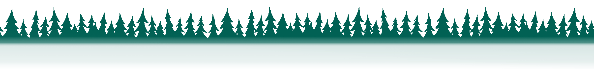

Welcome to Gamagotchi!
Gamagotchi is an upcoming frog breeder simulator, built on the Polygon Network.
Immerse yourself into the Gama universe, and hunt for the rarest species of non-fungible frogs.
Collect colorful friends, farm food, and explore the untamed wilderness!
The Gama ecosystem will run on $PAD, our utility token which players can play to earn.
It'll fuel a rich in-game marketplace where players can rent, buy and sell assets freely.
Support the game's development by staking our token (in the near future)!
